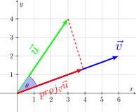

A Vector $\vec{u}$ projected onto $\vec{v}$ is:
$$\begin{align} proj_{\vec{v}}{\vec{u}} = \left(\frac{\vec{u} \cdot \vec{v}}{||\vec{v}||^2}\right)\vec{v} = \left(\frac{\vec{u} \cdot \vec{v}}{||\vec{v}||}\right)\frac{\vec{v}}{||\vec{v}||} \end{align}$$
The Scalar Component of $\vec{u}$ projected onto $\vec{v}$ is:
$$\begin{align} comp_{\vec{v}}{\vec{u}} = ||proj_{\vec{v}}{\vec{u}}|| = \frac{\vec{u} \cdot \vec{v}}{||\vec{v}||} \end{align}$$
The Vector Component of $\vec{u}$ that is orthogonal $\vec{v}$ is
$$\begin{align} proj_{\perp\vec{v}}{\vec{u}} = \vec{u} - proj_{\vec{v}}{\vec{u}} \end{align}$$
What Does This Even Mean?
A vector projection can be though of as the shadow a vector makes on another vector
The scalar projection or $comp_{\vec{v}}{\vec{u}}$ can be thought of as the length of the projection
Another way to represent vector projections is
$$\begin{align} \vec{u} = proj_{\vec{v}}{\vec{u}} + proj_{\perp\vec{v}}{\vec{u}} \end{align}$$
This is because the projection is parallel to $v$ and the orthogonal projection is perpendicular
Let's derive the projection formula using the graph above
The projection vector and $\vec{u}$ create a right triangle with a hypotenuse of $||\vec{u}||$
We can use cosine here
$$\begin{align} \cos(\theta) = \frac{||proj_{\vec{v}}{\vec{u}}||}{||\vec{u}||} \end{align}$$
If we rewrite cosine using the dot product formula, we can solve this further
$$\begin{align} \frac{\vec{u} \cdot \vec{v}}{||\vec{u}||\cdot ||\vec{v}||} &= \frac{||proj_{\vec{v}}{\vec{u}}||}{||\vec{u}||} \\ \frac{\vec{u} \cdot \vec{v}}{||\vec{v}||} &= ||proj_{\vec{v}}{\vec{u}}|| \\ \end{align}$$
We have the length of our vector, now we want it to be parallel to $\vec{v}$, we can do this by multiplying by the unit vector
$$\begin{align} ||proj_{\vec{v}}{\vec{u}}|| \frac{\vec{v}}{||\vec{v}||} &= \frac{\vec{u} \cdot \vec{v}}{||\vec{v}||} \frac{\vec{v}}{||\vec{v}||} \\ proj_{\vec{v}}{\vec{u}} &= \frac{\vec{u} \cdot \vec{v}}{||\vec{v}||} \frac{\vec{v}}{||\vec{v}||} \\ proj_{\vec{v}}{\vec{u}} &= \left(\frac{\vec{u} \cdot \vec{v}}{||\vec{v}||^2}\right)\vec{v}\\ \end{align}$$
Practice Problems
-
Practice 1
$$\begin{align} \end{align}$$